The Brood, painted: before and after the art pass
The Brood went into the world as blockouts: the right shapes and sizes, in flat colours. Every post since has said an art pass was queued. It has landed, and the pictures below are the same scenes before and after.

Three new materials
Most of the change comes from three materials the whole Brood now shares. The egg shell is veined and lit from within. The opal chitin is dark plates with a sheen of teal, violet and gold that moves as the view does. The glass is translucent, for wings and sacs. The paintings from the day the Brood was designed were the reference.
The Matriarch's sac and egg pods glow with veins now, and her crown has a violet membrane between the spines, with teal tips. Her nest is a tiered mound with glowing seams of ore and clusters of opal. Shardlings have opal quills. Gloamwings have veined wings of violet glass and a lit lantern. A Lodeback carries a glass sac lit gold, with dark ore packed round a gold heart.
The Brood, before and after
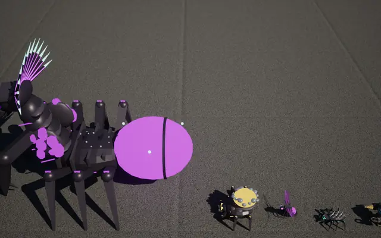
Before: her sac and pods in flat pink.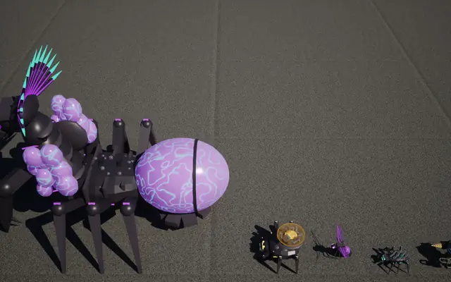
After: veined shell, lit from within.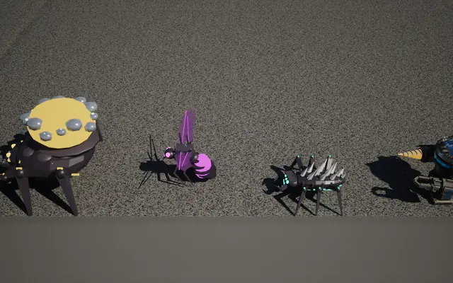
Before: Lodeback, Gloamwing, Shardling.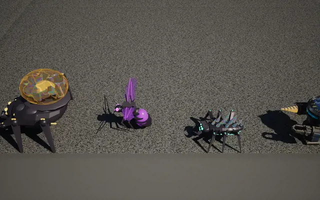
After: the gold glass sac, glass wings, opal quills.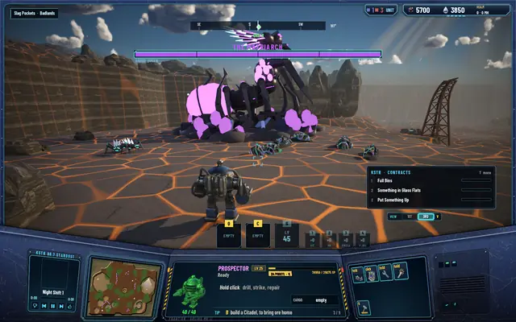
Before: the roar.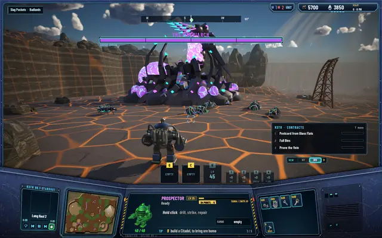
After: the same roar.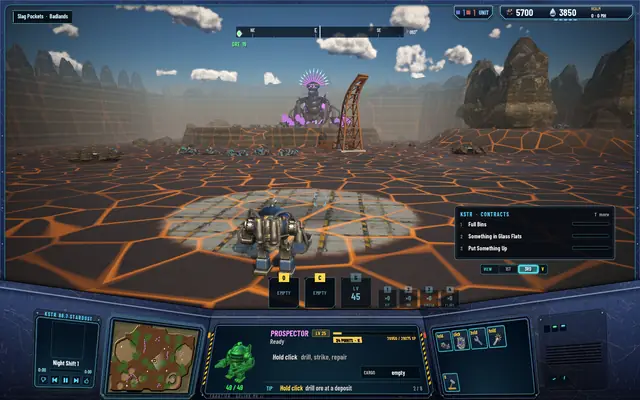
Before: the nest from the pad.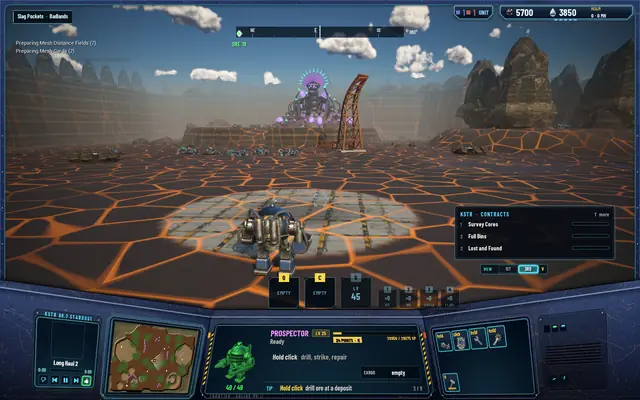
After: the crown and pods read across the slag.


The guns too
The pass covered the defences as well. The gatling gun is painted from its forge concept now: a tall furnace hopper of molten amalgam with glowing slits, over a ribbed gunmetal jacket. The Citadel's corner turrets are 1.8 times bigger, with lit rings at the muzzle. The amalgam rounds are drawn as a white-hot core in an orange halo, and they throw bigger sparks where they hit. The upgrade chevrons on a turret's base glow in their stats' colours: amber, red, ice and blue.
The gatling gun, before and after
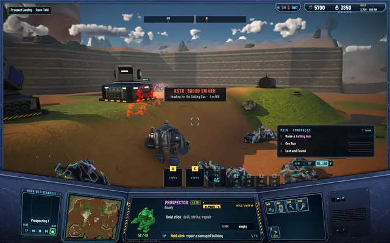
Before: the blockout, firing at a swarm.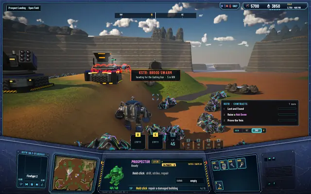
After: the forge, with its rounds drawn.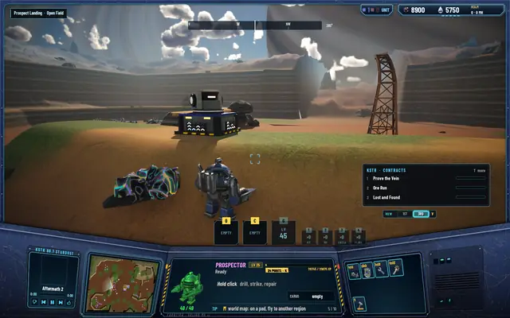
Before: the upgrade chevrons in plain white.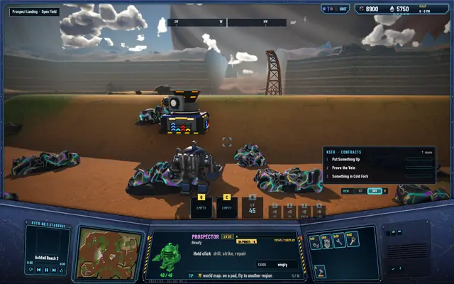
After: each stat in its own colour.


What it costs
Glowing, see-through materials cost more to draw. With 18 to 22 bugs in sight, the GPU's median frame went from 10.12 to 10.42 ms, about 0.3 ms more. The whole frame averages 10.52 ms, and its 95th percentile is 11.16 ms, well inside the 16.7 ms a frame at 60 a second allows.
What isn't right yet
The nest's mound stopped drawing when the regions got their walls, so the nest pictures here were taken before that change. The fix is part of the next pass on the regions' outlines. The Citadel's corner turrets are bigger now, but from the usual camera they still read small.